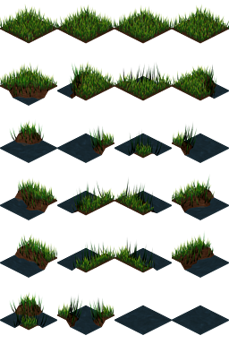
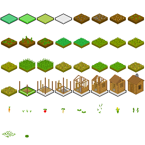

Budujemy edytor mapy obsługiwany tylko palcami: maluje się teren i obiekty, dwoma palcami przesuwa i przybliża, jest cofanie i zapis do pliku. Gotowy, działający kod jest w projekcie IsoEditor (przycisk z nazwą projektu → IsoEditor → ▶ Graj). Tutorial wyjaśnia go kawałek po kawałku.
| Gest | Działanie |
|---|---|
| 1 palec na mapie | maluje wybraną klatką; przeciąganie maluje dalej |
| 2 palce | przesuwanie mapy i zoom (szczypanie) |
| pasek na dole | paleta: przeciągnij, żeby przewinąć, dotknij, żeby wybrać. Pierwsze pole to gumka |
| Teren / Obiekty | warstwa, na której malujesz |
| Cofnij, Siatka, Nowa, Zapisz, Wczytaj, Środek | przyciski u góry |
| Plik | Zawartość |
|---|---|
Game.cs | klasa IsoEditor : GameScript – jedyny punkt wejścia: kamera, dotyk, paleta, rysowanie |
Mapa.cs | zwykła klasa z danymi mapy, cofaniem i zapisem do tekstu – nic nie rysuje |
images/grass_and_water.png | atlas terenu |
images/farma.png | atlas obiektów |
mapa.txt | pojawia się po „Zapisz” |
Podział jest celowy: Mapa to same dane, więc tę samą klasę wkleisz potem do gry, która mapę tylko wczytuje.

Równa siatka: 4 kolumny × 6 rzędów, każda klatka 64×64 px. Romb kafelka ma 64×32 px, a trawa wystaje nad nim. Jest tu pełna trawa, przejścia trawa–woda i czysta woda (dwie ostatnie klatki).
Pivot to punkt klatki, który trafi w podaną pozycję. Wybieramy środek górnej powierzchni rombu: w tej grafice to piksel (32, 28). Pivot podaje się względnie (0..1), więc dzielimy przez rozmiar klatki:
teren = LoadSprites("grass_and_water.png", 64, 64, new Vector2(0.5f, 28f / 64));Woda jest narysowana o kilka pikseli niżej niż trawa (jej romb ma środek w y ≈ 37). Przy tym samym pivocie lustro wody wypada trochę poniżej trawy, tak jak w naturze.

Ten atlas powstał z crops_tileset.png. Oryginał miał białe tło, nierówny układ i nachodzące na siebie
prostokąty sprite'ów, więc tło zostało wycięte, a każdy sprite przeniesiony do równej siatki 36×48 tak, żeby jego
„punkt stania” wypadł zawsze w pikselu (18, 35). Dzięki temu jeden pivot pasuje do wszystkich 42 klatek:
obiekty = LoadSprites("farma.png", 36, 48, new Vector2(0.5f, 35f / 48))[..42]; // dalej są puste polaKafelki farmy mają 32 px szerokości, a nasz romb 64 px, więc obiekty rysujemy w skali 2.
Gdybyś chciał użyć nierównego atlasu bez przerabiania, każdy sprite opisujesz ręcznie:
var atlas = LoadImage("moj_atlas.png");
var domek = new Sprite(atlas, new Rectangle(294, 131, 34, 42)).SetPivotPixels(17, 33);readonly IsoWorld swiat = new(32, 32); // tileSize 32 → romb 2 × 32 = 64 px szerokości, 32 px wysokościIsoWorld przelicza punkt mapy (x, y w kratkach, z w górę) na piksel i z powrotem:
swiat.ToScreen(new Vector3(x, y, 0)) – róg kratki (x, y) na ekranie,swiat.ToScreen(new Vector3(x + 0.5f, y + 0.5f, 0)) – środek kratki, czyli tu stawiamy pivot sprite'a,swiat.ToIso(piksel) – która kratka jest pod tym pikselem (część całkowita x i y).Kierunki przy domyślnym kącie 45°: większe x idzie w prawo i w górę ekranu, większe y w lewo i w górę.
Kratka (0, 0) jest więc najniżej na ekranie, czyli najbliżej patrzącego.
Origin zostawiamy w (0, 0) – przesuwaniem i zoomem zajmie się kamera.
Dwie warstwy liczb: numer klatki z atlasu albo -1, gdy pole jest puste.
class Mapa
{
public readonly int Rozmiar;
public int[,] Teren; // klatki z grass_and_water.png
public int[,] Obiekty; // klatki z farma.png
public bool WSrodku(int x, int y) => x >= 0 && y >= 0 && x < Rozmiar && y < Rozmiar;
...
}W grze: mapa.Teren[x, y] = 5; stawia klatkę nr 5 terenu na kratce (x, y).
W izometrii bliższe rzeczy zasłaniają dalsze, więc rysujemy od najdalszych do najbliższych (algorytm malarza).
Dalej leży kratka z większym x + y. Idziemy więc po przekątnych od największej sumy do zera,
a na każdej kratce rysujemy najpierw teren, potem obiekt:
int n = mapa.Rozmiar;
for (int suma = 2 * n - 2; suma >= 0; suma--)
for (int x = Math.Max(0, suma - n + 1); x <= Math.Min(n - 1, suma); x++)
{
int y = suma - x;
var srodekPola = swiat.ToScreen(new Vector3(x + 0.5f, y + 0.5f, 0));
int t = mapa.Teren[x, y], o = mapa.Obiekty[x, y];
if (t >= 0) DrawSprite(teren[t], srodekPola);
if (o >= 0) DrawSprite(obiekty[o], srodekPola, 0, 2f);
}Kratki na tej samej przekątnej leżą obok siebie w poziomie i się nie zasłaniają, więc ich kolejność nie ma znaczenia.
IsoSorter (projekt IsoStress).Kamera to dwie liczby: zoom i przesuniecie. Wzór: ekran = świat × zoom + przesunięcie.
Do rysowania zamieniamy go na macierz i otwieramy Batch po swojemu (z ostrymi pikselami):
var kamera = Matrix.CreateScale(zoom) * Matrix.CreateTranslation(przesuniecie.X, przesuniecie.Y, 0);
Batch.End();
Batch.Begin(samplerState: SamplerState.PointClamp, transformMatrix: kamera);
RysujMape();
Batch.End();
Batch.Begin(samplerState: SamplerState.PointClamp); // interfejs bez kamery
RysujInterfejs();
Batch.End();
Batch.Begin(); // na koniec zwykły Begin – aplikacja dorysuje ✕ i zamknie BatchDotyk przychodzi we współrzędnych ekranu, więc liczymy wzór od tyłu, a potem pytamy IsoWorld o kratkę:
Point PolePodPalcem(Vector2 ekran)
{
var naSwiecie = (ekran - przesuniecie) / zoom;
var iso = swiat.ToIso(naSwiecie);
return new Point((int)MathF.Floor(iso.X), (int)MathF.Floor(iso.Y));
}Floor, a nie rzutowanie na int – dla -0.3 rzutowanie da 0, a powinno -1 (poza mapą).
Jeden palec może znaczyć różne rzeczy zależnie od tego, gdzie dotknął na początku. Dlatego pamiętamy, jaki gest trwa, aż palce znikną z ekranu:
enum Gest { Brak, Malowanie, Paleta, Kamera, Przycisk }
Gest gest;W Update liczymy palce, które wciąż dotykają (puszczony palec jest jeszcze przez jedną klatkę w Touches ze stanem Released):
palce.Clear();
foreach (var t in Touches)
if (t.State != TouchLocationState.Released)
palce.Add(t);
if (palce.Count == 0) { ZakonczGest(); return; }
if (palce.Count >= 2)
{
// drugi palec tuż po pierwszym: to był początek przesuwania, nie malowanie
if (gest == Gest.Malowanie && czasGestu < 0.3f) CofnijPociagniecie();
if (gest != Gest.Kamera) { gest = Gest.Kamera; poprzedniaOdleglosc = 0; }
Kamera(palce[0].Position, palce[1].Position);
return;
}
var p = palce[0].Position;
switch (gest)
{
case Gest.Brak: ZacznijGest(p); break; // nowy dotyk: przycisk? paleta? mapa?
case Gest.Malowanie: Maluj(p); break;
case Gest.Paleta: przewiniecie = ...; break;
}void Maluj(Vector2 p)
{
var pole = PolePodPalcem(p);
kursor = pole; // żółty romb pod palcem
if (!mapa.WSrodku(pole.X, pole.Y) || Warstwa[pole.X, pole.Y] == Wybrany) return;
Warstwa[pole.X, pole.Y] = Wybrany; // Wybrany = -1 to gumka
cosZmieniono = true;
}Sztuczka: punkt świata, który był pod środkiem palców w poprzedniej klatce, ma zostać pod nowym środkiem palców. Zmiana odległości między palcami zmienia zoom. Ten jeden wzór daje naraz przesuwanie i przybliżanie wokół palców:
void Kamera(Vector2 a, Vector2 b)
{
var srodek = (a + b) / 2;
float odleglosc = Vector2.Distance(a, b);
if (poprzedniaOdleglosc > 10 && odleglosc > 10)
{
var punktSwiata = (poprzedniSrodek - przesuniecie) / zoom;
zoom = Math.Clamp(zoom * odleglosc / poprzedniaOdleglosc, 0.4f, 5f);
przesuniecie = srodek - punktSwiata * zoom;
}
poprzedniSrodek = srodek;
poprzedniaOdleglosc = odleglosc;
}Paleta to pasek pól po 150 px. Pole nr i leży na (i + 1) * 150 - przewiniecie
(pole −1 to gumka). Przeciąganie zmienia przewiniecie; wybór następuje dopiero przy puszczeniu palca
i tylko wtedy, gdy palec prawie się nie ruszył – inaczej każde przewinięcie wybierałoby klatkę:
if (gest == Gest.Paleta && MathF.Abs(ostatniDotyk.X - startDotyku.X) < 25)
{
int i = (int)((ostatniDotyk.X + przewiniecie) / SzerokoscPola) - 1;
if (i < Paleta.Length) Wybrany = i;
}Przyciski to lista krotek (obszar, napis, akcja, włączony), układana co klatkę od nowa
(telefon można obrócić, a Width/Height się zmienią):
przyciski.Add((new Rectangle(20, 40, w, 90), "Cofnij", Cofnij, false));
przyciski.Add((new Rectangle(30 + w, 40, w, 90), "Siatka", () => siatka = !siatka, siatka));
// w ZacznijGest:
foreach (var przycisk in przyciski)
if (przycisk.obszar.Contains(p)) { przycisk.akcja(); gest = Gest.Przycisk; return; }Prawy górny róg zostawiamy wolny – tam jest ✕ aplikacji.
Cofanie jest najprostsze z możliwych: na początku każdego pociągnięcia palcem zapamiętujemy kopię obu tablic. Przy mapie 16×16 to 2 KB, więc 50 kroków wstecz kosztuje 100 KB.
public (int[,] teren, int[,] obiekty) Kopia() => ((int[,])Teren.Clone(), (int[,])Obiekty.Clone());Jeśli pociągnięcie niczego nie zmieniło (np. malowanie tą samą klatką), kopię wyrzucamy przy puszczeniu palca.
Zapis używa ProjectFile – pełnej ścieżki w folderze projektu – i zwykłego System.IO:
using System.IO;
File.WriteAllText(ProjectFile("mapa.txt"), mapa.DoTekstu());
mapa = Mapa.ZTekstu(File.ReadAllText(ProjectFile("mapa.txt")));Format pliku: pierwsza linia to rozmiar, potem wiersze terenu, potem wiersze obiektów – liczby rozdzielone spacją. Plik możesz otworzyć i poprawić w menedżerze plików albo przez FTP.
czasGestu i to, czy palec się ruszył.Queue<Point>) po kratkach z tą samą klatką.int[,] Wysokosc i rysowanie w ToScreen(new Vector3(x + 0.5f, y + 0.5f, h)). IsoWorld(32, 16) – drugi parametr to piksele na jednostkę wysokości.Mapa.cs, obrazki i mapa.txt, dodaj postać chodzącą po trawie, która omija wodę (sprawdzaj numer klatki terenu).